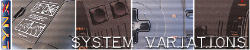
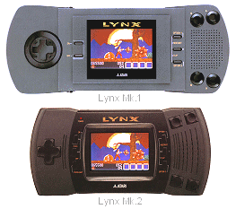
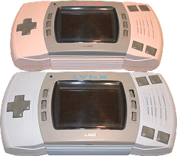

|

When the original Lynx was
launched it was classed as a "portable" entertainment
system, in fact the original name of the Lynx was the
PCES, or Portable Computer Entertainment System, but as
that didn't have such a catchy marketing title, it was
eventually renamed the "Lynx". The development name
for the Lynx in house was called "Handy".
As technically impressive as
the Lynx was, and it even came as a shock to Nintendo
executives who first saw it at the CES show in 1989, it
was stretching it a little calling it a portable when
compared to the almost pocket sized Game Boy. Even
so, the Lynx was easily more portable than any other
colour video game system because it was the first in the
world, and Atari stole a march on Nintendo's monochrome
Game Boy.
The original Lynx was very
comfortable to hold, and its size wasn't a handicap to the
ergonomics. But, as the months went by, and
the Game Boy began to show impressive sales results, Atari
began redesigning the Lynx to make it more attractive as a
truly portable device.

The second version, or "Mark
2" as it became known, was a real effort by Atari to scale
the original unit down in both physical size and to
increase on some of the originals strengths. The
Mark 2 unit had a button to switch the backlight off to
increase battery life, and although some gains were made
in reducing overall power consumption, the Mark 2 still
only gave around 4-5 hours of play out of a set of new
batteries. The screen size was kept the same, at 3.5
inches, and new rubber grips on the back of the unit were
added. The original "cartridge door" was scrapped,
and games were just slotted into the cartridge slot on the
top of the Mark 2 machine.
A power light was added that
blinked when the battery power was low, although the
screen backlight going dimmer was a better indication of
low power, the LED was more
for aesthetics' than for any practical use. In overall size, the unit
was reduced by about an eighth over the Mark 1. The
Mark 2 was slightly deeper in size, and the colour of the
units moulded plastic was black, whereas in the case of the Mark
1, the light gray colour was actually applied over
the units original plastic, and tended to come away and
fade after prolonged use.
Price reductions assumed a
much lower cost to manufacture the Mark 2, although of a
high quality construction, some argue the Mark 1 is a more
robust machine. The Mark 2 had a weaker speaker than
the original, although playing with the use of headphones
is highly recommended and the Lynx sound system can be
better appreciated that way.

Who knows what the Lynx may
have been like today if it was still around. Atari had
toyed with the idea of "His and Her" Lynx units, as
prototypes exist coloured a sickly blue and off-pink, but
further development to reduce the systems size and
increase its battery life were the more important hardware
requirements needed. No doubt, if it had been
more successful, it could have been the Atari "Game Boy",
but lack of marketing and developer support ensured the
Lynx was only appreciated by a select clientele.
|